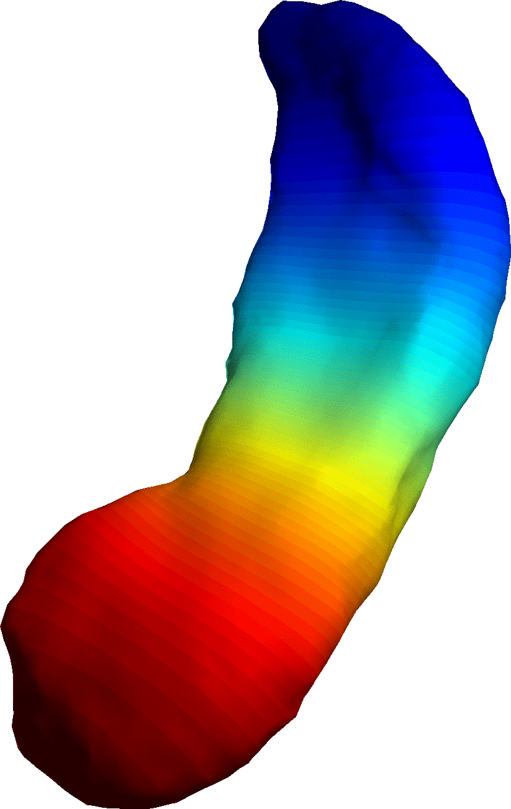

Ivo D. Dinov, Research
For the past five years prof. Dinov
has been working on designing, implementing, testing and
documenting mathematical and statistical models for studying and
analyzing biomedical data, multi-modal images, genomics sequences,
and other natural phenomena. Details about these projects are
available in technical reports
and research papers. Examples of ongoing projects include:
Other research projects include:
- Project 1:  Modeling of Biological Shape Form and Size. This project introduces and evaluates effective, robust and efficient techniques for representation of N-D signals in non-Euclidian spaces (e.g., cortical surfaces, nuclear envelopes, nucleoli shapes, etc.
- Project 2: (Big) Data Science (Research,
Development, Training):
- Compressive Big Data Analytics framework
- SOCR Big Data Services (e.g., Dashboard)
- Michigan Institute for Data Science (MIDAS) Graduate Data Science Certificate Program
- Project 3: Open-Science Projects: Develop,
validate, support, and share an open access sustainable
framework for data management, computational infrastructure,
analytical tools, learning resources, and web-services. There
have been a total of over 8 Million users (2014) of these
open-science resources.
Resource Type Description Examples Data Web-services
Annual Users:15,000Research-derived, simulated, translational and clinical data archives. Dashboard for mashing multi-source socioeconomic and medical datasets, big data analytics, graphical data exploration and discovery UMich SOCR Data
UCLA SOCR Data Archive
SOCR DashboardData Web-services
Annual Users:15,000Research-derived, simulated, translational and clinical data archives. Dashboard for mashing multi-source socioeconomic and medical datasets, big data analytics, graphical data exploration and discovery UMich SOCR Data
UCLA SOCR Data Archive
SOCR DashboardComputational Infrastructure
Annual Users:400,000Comprehensive collection of web-tools for demonstrating probability, statistics, mathematics and engineering concepts. These include probability calculators, statistics analysis tools, data modeling and visualization, virtual games, simulations and experiments UMich SOCR Services
Probability Distributome Resource
SOCR Tables and high-precision calculators
SOCR GitHub Source Code
SOCR JIRA/Atlassian PM System
SOCR GoogleCode SVNAnalysis Tools
Annual Users:8,000Modern HTML5 resources for exploratory analytics, data discovery, simulation, and visualization SOCR HTML5 Webapps
SOCR XTK BrainViewerLearning Resources
Annual Users:1,800,000Community-built, open-access and multilingual resources blending information technology, scientific techniques and modern pedagogical concepts SOCR Probability and Statistics EBook (UMich)
SOCR Probability and Statistics EBook (UCLA)
Scientific Methods for Health Sciences (EBook)
Scientific Methods for Health Sciences (Courses)
SOCR Wiki Service (UMich)
SOCR Wiki Service (UCLA) - Project 4: The Genomics and Informatics Project is focused on the design, execution, validation and open dissemination of graphical pipeline protocols for sequence processing, mapping, analysis, and visualization.
- Project 5: The Interactive Visualization of
Multimodal Imaging Data project aims to develop new techniques
and software tools for managing, processing and visualizaiton of
multimodal imaging and meta-data (e.g., See the Web-based
WebGL Brain Viewer.
- Project 6: The Statistical Computing Project develops new open-source, efficient and portable computational libraries for diverse types of statistical data analyses.
Other research projects include:
- Project 1: We have developed the first fully
stochastic Functional & Anatomic Sub-Volume Probabilistic
Atlas (F&A SVPA) for the elderly and Alzheimer's Disease
(AD) patients. This atlas allows us early diagnosis, prognosis
and planning of treatment for AD subjects, based on data of
their blood perfusion and brain anatomy. (F&A
SVPA)
- Project 2:, deals with quantifying (numerically)
the neurological and topological differences and similarities
between pairs of (MRI, fMRI, PET, CT) brain scans. We were able
to design metrics on the space of Fractal/Wavelet Transforms of
signals, that help us make quantitative distinctions between
equivalent medical images, using their transforms. The
theoretical function estimation schemes we introduced have been
used to develop an algorithm and a computer implementation for
an automatic fast and robust approach to quantifying warp
performance. This software package is called "Wavelet Analysis
of Image Registration" (WAIR)
- In Project 3, we develop a new technique for
determining the statistically significant metabolic variations
in single/multi-subject human brain functional studies. The new
method, called Sub-Volume Thresholding (SVT),
models the difference images as "locally" stationary Gaussian
random fields. Thus adding more flexibility to the commonly used
"globally" stationary random approaches. Our model naturally
encounters a class of continuous functions we showed induces a
family of permissible covariance matrices (valid covariograms).
Using the SVT technique we are trying to identify local
perfusions and differences in groups of; left vs right hand
motor studies; amnesia vs memory-retrieval deficit AD
(Alzheimer's disease) patients; and groups of hallucinations vs
delusion patients. If we wish to compare two images and identify
corresponding anatomical features (or regions of activation, for
functional data) we need to use a "warping" technique to deform
one of the images to an image similar to the second one. This
brings up the question of "What kind of deformation should we
use?".
- In Project 4, we constructed a mathematical model
(based on Fractal and Wavelet Analyses) that helps classifying
warps and warping techniques.
- Segmentation of medical images is the topic of Project
5. Using the discrete dynamical system induced by our fractal
transform we designed a segmentation algorithm. The two major
goals in brain image segmentation are: Determining the regions
of high concentration of White Matter, Gray Matter and CSF
(Cerebral Spinal Fluid); and Reducing the data complexity and
dimensionality.
- Our models, and our metrics, turn out also to be useful
for image magnification.In Project 6, we compared the
current state-of-the-art (bilinear) Interpolation techniques for
image zoom in, to the novel Fractal magnification algorithms. We
were able to show that our model outperforms the interpolation
method in some aspects. Blowing up images using their fractal
transforms reveals more details (at lower resolution) and avoids
the smearing and blurring effects of the interpolation.
- Fractal-like transformations could be used for automatic
pattern recognition and feature extraction. Project 7
deals with a simple application of such techniques. We are able
to show that a decent pattern recognition algorithm could be
used for image registration and alignment - a very useful tool
for image comparison.
- My work in various Optimization projects includes
developing, implementing and testing algorithms for solving
min/max, linear/non-linear problems/systems/inequalities. Using
Subdivision Traversing and other topological algorithms we
introduce a class of simple, fast and robust algorithms for
function optimization. The
casting problem serves as a motivation in this project. When casting an airplane wing, for example, there are a number of input variables (like: Temperature, Pressure, Flow velocity, alloy proportions, etc.) and a list of output characteristics (like: Strength, Number of voids, etc.). The problem is to increase the strength of the wing, decrease the number of bubbles (voids) etc., without actually knowing the function connecting the two types of variables. Currently, this problem is approached by some sort of uniform (or random) selection of test points (input variables), conducting an experiment and observing the output. We have designed an algorithm, that solves an optimization problem to optimize the search for the "right" input based on the previously obtained functional values at prior test points.